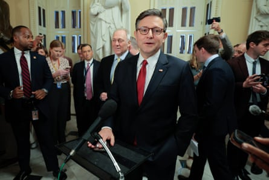
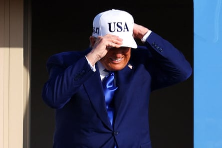

L ast November, Donald Trump made a solemn vow to all Americans: “Every citizen, I will fight for you, your family and your future every single day.” Eight months later, Trump is vigorously backing many policies that will mean pain for millions.
Trump has pushed to enact the Republican budget bill , which would make significant cuts to Medicaid, Obamacare, and food assistance, and would do the greatest damage to those Americans struggling hardest to make ends meet – the 30% of the US population that lives in households earning under $50,000 a year.
Even as Trump and Republican lawmakers are rushing to cut over $1.4tn in health and food assistance for non-affluent Americans, Trump continues to pressure Congress to extend over $3tn in tax cuts that disproportionately help the wealthy and corporations.
Trump has embraced these Robin-Hood-in-reverse policies, even though it was voters earning less than $50,000 a year who delivered victory to him last November. They favored him over Kamala Harris by 50% to 48%, according to exit polls, while Trump and Harris tied among voters earning $50,000 or more a year.
Several social policy experts said Trump has engaged in hypocrisy at best and betrayal at worst when it comes to the working-class and blue-collar Americans he promised to fight for. Speaking about the Republicans’ “big, beautiful” budget bill, Sharon Parrott, president of the Center for Budget and Policy Priorities, said: “Who’s getting hit, who’s bearing the cost? It’s people with low and middle incomes, people that the president and many Republican policymakers promised to serve and support in the last election.”
Mike Johnson talks to reporters in Washington on Wednesday.Photograph: Chip Somodevilla/Getty Images
The budget bill would mean a net financial loss for the bottom 30% of American households by income – after factoring in its tax provisions and cuts in benefits. The House bill would hit the lowest earning 10% of Americans hardest: for them, it would mean a painful $1,600 cut in income on average (a 3.9% drop), according to the Congressional Budget Office (CBO). At the same time, the Trump-backed bill would be a boon to wealthy households – it would mean a $12,000 increase in net income, on average, for households in the top 10%, those earning above $692,000 a year. According to the Yale Budget Lab, the top 0.1% – those with income over $3.3m – would receive tax cuts of $103,500 on average.
The CBO says the income of the bottom 10% tops off at $22,868 (before factoring in government transfers). The second lowest decile earns from $22,868 to $43,137; the third decile earns up to $55,628; and the fourth up to $68,601.
The Yale Budget Lab found that the bottom 20% of US households would see their incomes drop by 2.9% on average over the next decade, and the second lowest quintile – moderate-income households – would suffer a 0.4% loss of income on average. But the richest 20% would see their incomes rise by 2.3%. Those in the top 1% would see their incomes climb by $29,585 on average.
Trump is demanding these big tax cuts for the rich even though the CBO says the budget bill will increase the federal debt by $3.3tn – a move that will push up interest rates and make mortgages and home-buying more expensive.
According to the Institute of Taxation and Economic Policy, a left-leaning thinktank, the $121bn tax cuts that would go just to the richest 1% next year are significantly more than all the tax cuts that would go to the bottom 60% of Americans in terms of income.
The poorest 20% of Americans would receive just 1% of the bill’s tax cuts next year, while the highest earning 5% would receive 44% of the cuts.
Last week, Trump urged lawmakers to enact the bill, saying: “There are hundreds of things in there. It is so good .” At a news conference, the president said the more than $1tn in Medicaid and food assistance cuts wouldn’t hurt anyone.
“It won’t affect anybody ,” he said. “It is just fraud, waste and abuse.”
But Parrott took a sharply different view: “The bill stands alone historically for its unique upside-down mix of large tax cuts for the top, deep cuts that affect low- and middle-income people, and massive increases in deficits and debt.”
John Ricci, the Yale Budget Lab’s associate director of policy analysis, said: “It’s unambiguous that low- and moderate-income Americans will be worse off on average under the budget bill, and that’s principally because the cuts in Medicaid and Snap [the Supplemental Nutrition Assistance Program] would by definition fall most heavily on these groups,” Ricci said.
Jeanne Lambrew, the Century Foundation’s director of health policy reform, estimates that at least 16 million Americans will lose health coverage because of the budget bill – refuting White House claims that “no one will lose coverage”. Lambrew said the bill would cause a more than a 50% increase in the number of uninsured nationwide, to nearly 45 million people.
What’s more, the Trump-backed plan sharply reduces Affordable Care Act subsidies, and that will force millions of Americans to either drop coverage or pay far more for coverage. Millions of Americans will find it harder to obtain healthcare, with many forced to take on far more medical debt.
While Trump and many Republicans say the Medicaid cuts are all about reducing “waste fraud and abuse,” Lambrew calculates that a mere 3.5% of the $1tn in healthcare cuts come from cutting waste and abuse. “What Trump has been saying is, ‘We’re not cutting Medicaid. We’re just cutting fraud.’ That’s gaslighting.” Lambrew said.
Archbishop Timothy Broglio, president of the US Conference of Catholic Bishops, sent the Senate a letter that harshly criticized the budget bill . “As Pope Leo XIV recently stated, it is the responsibility of politicians to promote and protect the common good, including by working to overcome great wealth inequality,” he wrote. “This bill does not answer this call. It takes from the poor to give to the wealthy.”
According to a Quinnipiac University poll , only 27% of registered voters support the GOP budget bill, while 53% oppose it. A Fox News poll found that 38% support the bill, while 59% oppose it.
The House bill’s deep cuts in food benefits will cause 7 million people, including over 2 million children, to lose food aid or have their food aid cut significantly. The Trump-supported bill also makes sharp cuts in Pell Grant awards. The Center for American Progress says this means 4.4 million students from low- and moderate-income families could lose some or all of their federal grant aid.
In another blow to Americans earning under $50,000, Trump pushed to have the budget bill eliminate the “Low-Income Home Energy Assistance Program”, which, as one website put it, “keeps poor people from freezing to death at home”. Killing the program would end heating subsidies for 6 million Americans, but so far congressional Republicans have spared the program and not bowed to Trump on this.
Donald Trump wears a USA hat as he steps off Air Force One in Amsterdam in June.Photograph: Piroschka Van De Wouw/Reuters
In another blow to blue-collar Americans, the bill would undo much of Joe Biden’s efforts to speed the creation of clean-energy industries, and that could put hundreds of thousands of potential jobs at risk, many of them factory jobs.
“In this bill, folks in Congress went out of their way not to give anything to low-income people,” said Chuck Marr, vice-president for federal tax policy at the Center for Budget and Policy Priorities. He noted that in previous tax cut bills that favored the rich, GOP lawmakers made sure to include some sweeteners for low- and moderate-income Americans.
“But in this bill,” Marr said, “folks in Congress said: no, we’re going to go after these people. They’re going after healthcare and food, and these are the people who are also going to get hammered by Trump’s tariffs.” Lower-income people spend a higher percentage of their income on goods.
“This bill is a major shift,” Marr added. “They’re taking away from poor people and working-class people and channeling it to very high-income people. I think it’s punitive. It’s harsh. It’s mean, brutal.”
Trump’s tariffs would also hit less affluent Americans hardest. One study found that Trump’s planned tariffs would cause the bottom 20% of households to pay up to 5.5% of their income toward tariff-caused higher prices. That’s more than two and a half times the percentage that those in the top 20% would pay (2.1% of income).
Trump has repeatedly boasted that the bill contains several provisions he championed to help working-class Americans. At a White House event to promote the bill, he pointed to a DoorDash driver from Wisconsin who was on hand to help make his case that the “no tax on tips” provision would help workers.
But tax experts say that provision will help only a tiny fraction of those earning under $50,000 . Only 4% of workers in the bottom half by income are in tipped jobs. Moreover, nearly two-fifths of tipped workers are already earning so little that they don’t pay federal income taxes.
“Given how the current income tax system works, this provision will provide little or no benefit to those workers,” said Ricci. “Those workers tend to have low incomes, and the US system doesn’t basically tax their incomes, and this won’t offer them any additional tax reduction.” In other words, the server making $100,000 a year at a high-end restaurant will benefit substantially from no tax on tips, while the hotel housekeeper or 20-hour-a-week waiter at a diner making $25,000 a year will be helped little or not at all.
As for Trump’s much-ballyhooed “no tax on overtime” provision, that, too, will do little for those earning under $50,000, Ricci said. “That provision is really geared to middle- and upper-middle groups,” he said. “People in the bottom 50% aren’t paying much income tax, and so no tax on overtime wouldn’t benefit them much. People in the bottom 40%, they’re often in a precarious employment situation. They’re generally not working 45 or 50 hours a week.”
Ricci estimated that for Americans in the bottom 40% by income, the no tax on overtime provision will mean “less than a $10 tax cut per year”. “It’s essentially a rounding error,” he said.
Republicans boast that increasing the child-tax credit will help millions of struggling families – the House bill would increase that credit, now $2,000, to $2,500, while the Senate raises it to $2,200. Under current law, one in four children – about 17 million – are ineligible to qualify for the full $2,000 credit because their family’s income is too low to qualify for the full credit. A two-parent family with two children needs to earn over $48,000 to obtain the full credit.
Under the House bill, a single parent with two children who earns $16,000 a year would get no additional tax credit, while a married couple with two kids and a $400,000 income would see their tax credit jump by $1,000.
With their eagerness to cut the social safety net, Republicans seem to be treating millions of Americans who earn less than $50,000 as undeserving takers. “People earning under $50,000 are major targets of the Republican agenda. Their health coverage is targeted. Their food security is targeted,” said Marr. “They are left out of key provisions expanding tax cuts, like the child tax credit. They are most at risk from the Republican tariffs. They’ll be hurt across the board.”
Marr said the budget bill treats “these people very harshly”.
“It’s the harshest bill we’ve ever seen since budget deficits became an issue 40 years ago,” he said. “This is the first bill that simultaneously targets programs for poor people and working-class people to pay for it, and then takes that money to pay for tax cuts for very wealthy people. It makes poor and working-class people worse off. That’s not been done before.”